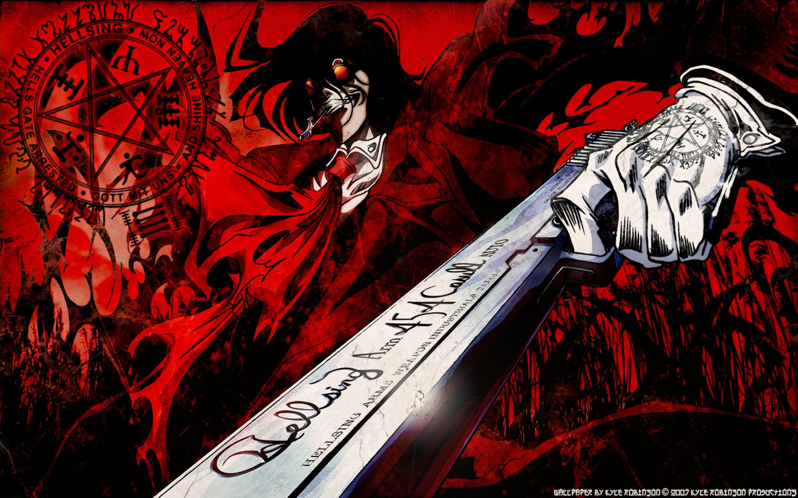

Alucard, de Hellsing, é uma das representações mais complexas e densas de vampiros na ficção moderna. Diferente da maioria dos personagens que seguem uma lógica de evolução linear de poder, Alucard já começa a narrativa como uma entidade praticamente incompreensível em termos humanos. Ele não é apenas forte — ele é estruturalmente diferente. Sua existência não se baseia em um corpo físico comum, mas em um acúmulo de almas que ele absorveu ao longo dos séculos. Cada uma dessas almas funciona como uma extensão da sua própria vida, tornando-o algo muito além de um ser biológico: ele é, essencialmente, um sistema de múltiplas existências coexistindo em um único “indivíduo”. Originalmente, Alucard é o próprio Drácula, reinterpretado a partir do romance Dracula. No entanto, ao invés de continuar como um senhor independente do terror, ele se torna subordinado à família Hellsing, atuando como uma arma contra ameaças sobrenaturais. Esse detalhe é central para entender o personagem: apesar de ser absurdamente poderoso, ele aceita a submissão. Isso não acontece por fraqueza, mas por uma necessidade psicológica profunda. Alucard enxerga a si mesmo como um monstro que ultrapassou qualquer noção de humanidade, e por isso acredita que precisa ser controlado por alguém que ainda represente valores humanos. Seu poder não é apenas físico. Ele possui habilidades que vão desde regeneração praticamente infinita até manipulação de sombras, mudança de forma e capacidade de invocar as próprias almas que consumiu. Quando libera completamente suas restrições, impostas pela organização Hellsing, ele deixa de ter uma forma definida e passa a se manifestar como uma massa caótica de entidades e criaturas. Nesse estado, ele não pode mais ser tratado como um indivíduo convencional — ele se aproxima mais de um conceito, algo que representa a própria ideia de morte e destruição. Apesar disso, o aspecto mais relevante de Alucard não está no seu poder, mas na sua psicologia. Ele despreza humanos fracos, mas ao mesmo tempo demonstra uma admiração quase obsessiva por aqueles que possuem força de vontade e propósito. Isso acontece porque ele próprio perdeu essas coisas. Por ser imortal, Alucard não possui um fim natural, e essa ausência de limite retira da sua existência qualquer senso real de significado. Ele luta não para vencer, mas na esperança de encontrar alguém capaz de derrotá-lo de forma legítima. Em outras palavras, ele busca um fim que dê sentido à sua própria existência. Essa dualidade — entre ser uma entidade praticamente invencível e, ao mesmo tempo, profundamente vazia — é o que define Alucard. Ele não é apenas um vilão ou um anti-herói; ele é uma reflexão sobre o que acontece quando o poder absoluto é alcançado sem propósito. Enquanto muitos personagens buscam se tornar mais fortes, Alucard já ultrapassou esse estágio há muito tempo. O que resta para ele não é a evolução, mas a espera: a espera por alguém que consiga fazer o impossível e, finalmente, encerrá-lo.
